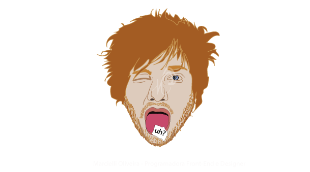
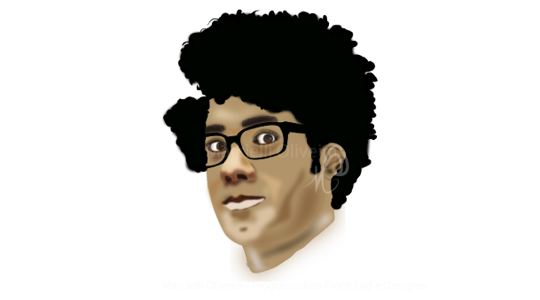
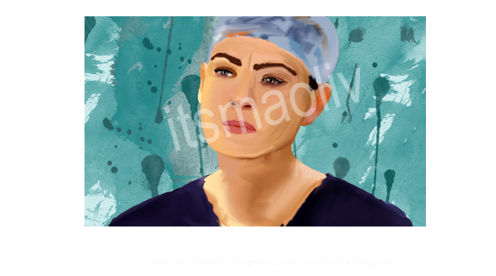
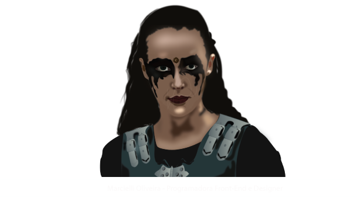
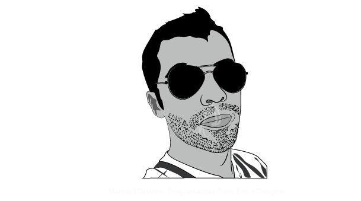
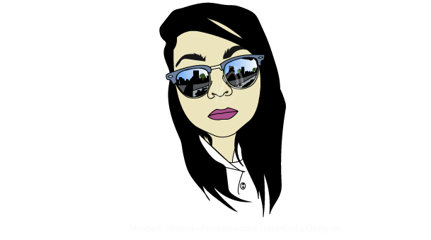

Logo: Encosto - Matérias: Arduíno, Programação Web, Sistemas Operacionais (4° Semestre)

Desenho: Ed Sheeran - Desenho nas horas livres

Desenho: Moss - Desenho nas horas livres (Personagem da série The IT Crowd)

Desenho: Meredith Grey - Desenho nas horas livres (Personagem da série Grey's Anatomy)

Desenho: Lexa - Desenho nas horas livres (Personagem da série The 100)

Desenho: Tony- Trabalho (Cliente)

Desenho: Eu mesma Marcielli Oliveira - Desenho nas horas livres (Quando você se desenha pra ver se os outros te vêem como você se vê)